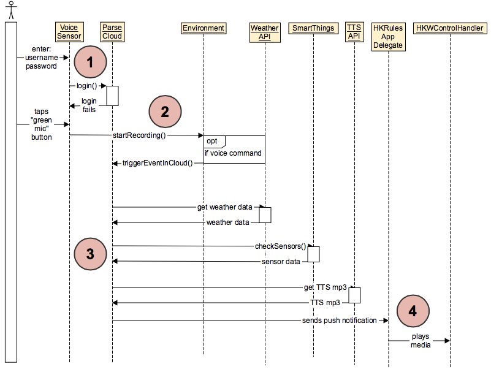

Leave House Scenario¶
Have trouble reading image? `Click Here! <http://hkiotdemo.readthedocs.org/en/latest/_images/leavesd.png`__

- The user enters their username and password into the Voice Sensor and logs in to Parse, so the Voice Sensor knows which user to send push notifications to.
- The user taps the green microphone button on the voice sensor, and if the button turns red, then the sensor is recording. If the voice sensor hears a voice command, it will trigger an event in the Parse Cloud.
- When Parse receives a notification from the voice sensor that a voice command was given (namely “I’m leaving”), Parse collects weather data, checks the house’s security sensors, and compiles that information into a TTS message which it sends in a push notification to the HKRules AppDelegate running on the user’s iOS device.
- When the HKRules AppDelegate receives the push notification, it plays the TTS message through the Harman speakers.